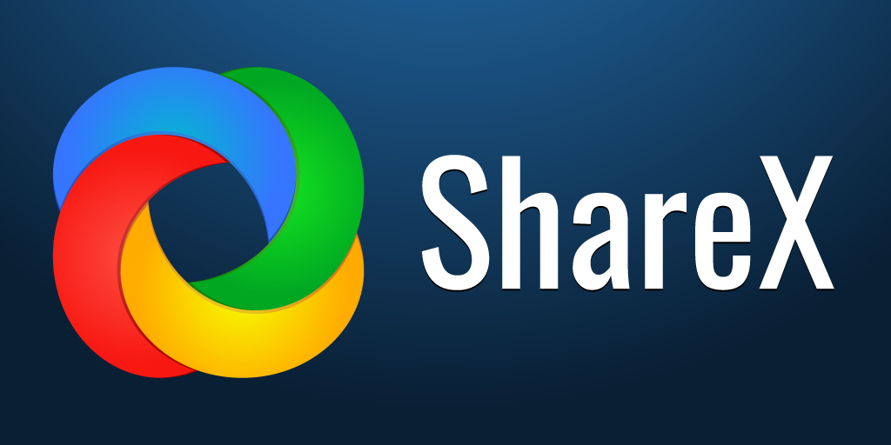

ShareX: Утилита для записи экрана и создания скриншотов
ShareX — это универсальная программа для создания скриншотов, записи экрана и автоматизации задач. Она идеально подходит для разработчиков, дизайнеров и обычных пользователей, предоставляя множество полезных инструментов. С её помощью вы можете делать:
Основные функции:
- Скриншоты с прокруткой или выделением.
- Записывать видео и создавать GIF-анимации.
- Распознавать текст с изображений (OCR).
- Загружать файлы на облачные сервисы.
- Использовать встроенные инструменты, такие как пипетка и линейка.
Примеры использования:
ShareX предоставляет широкий спектр возможностей, среди которых:
- Создание скриншотов с аннотациями.
- Поддержка множества форматов изображений и видео.
- Интеграция с популярными сервисами, такими как Dropbox и Google Drive.
- Настройка горячих клавиш для быстрого доступа к функциям.
Как установить ShareX?
- Перейдите на официальный сайт ShareX.
- Скачайте последнюю версию программы.
- Установите её, следуя инструкциям мастера установки.